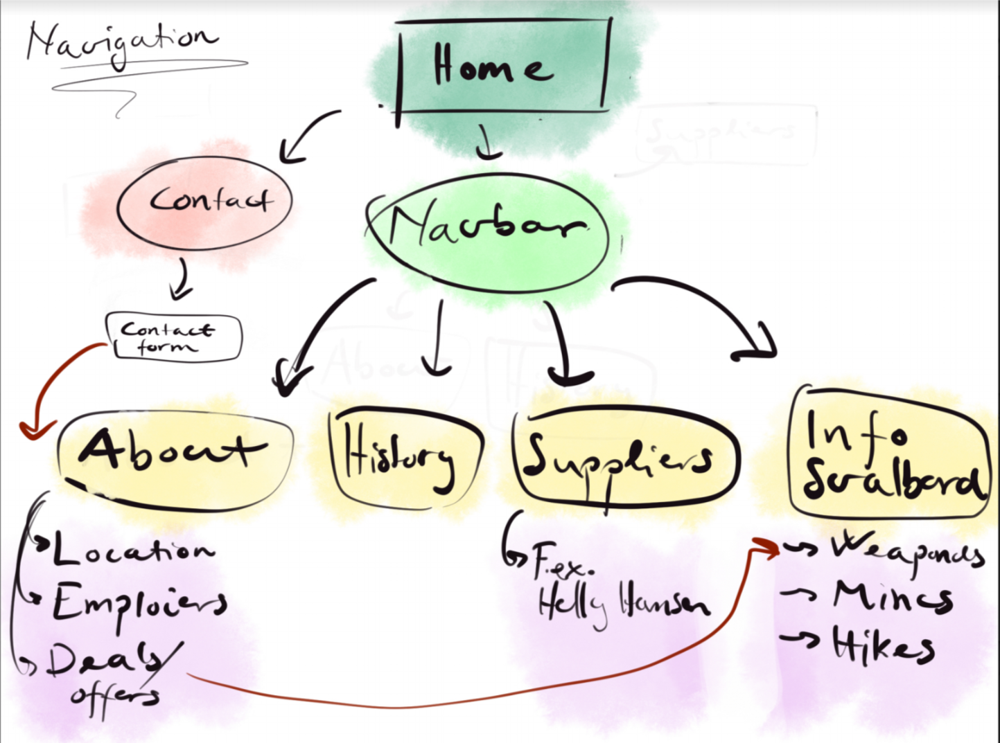
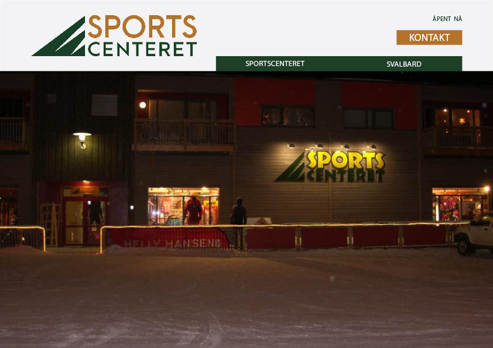
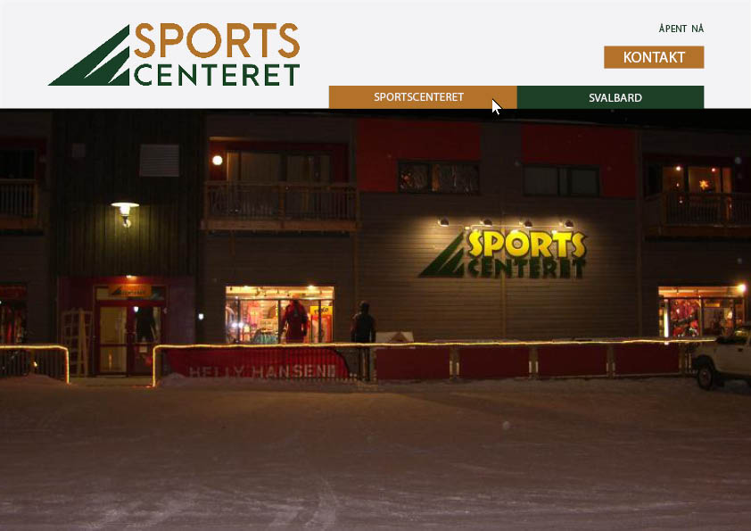
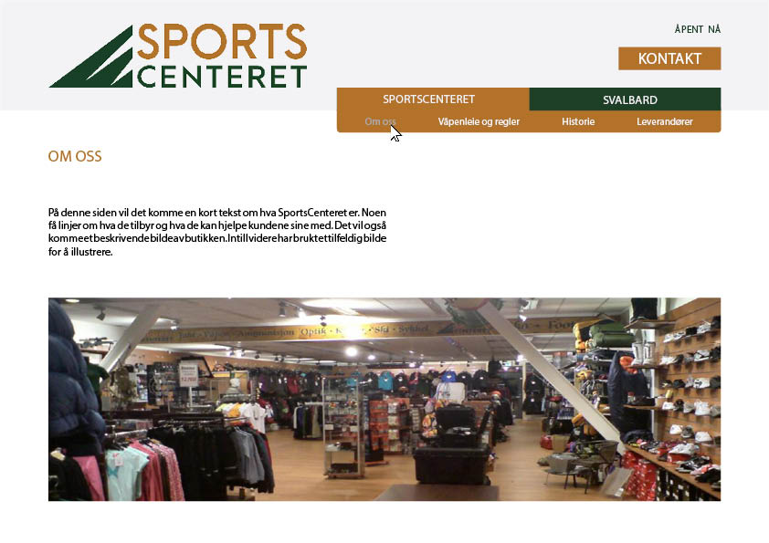
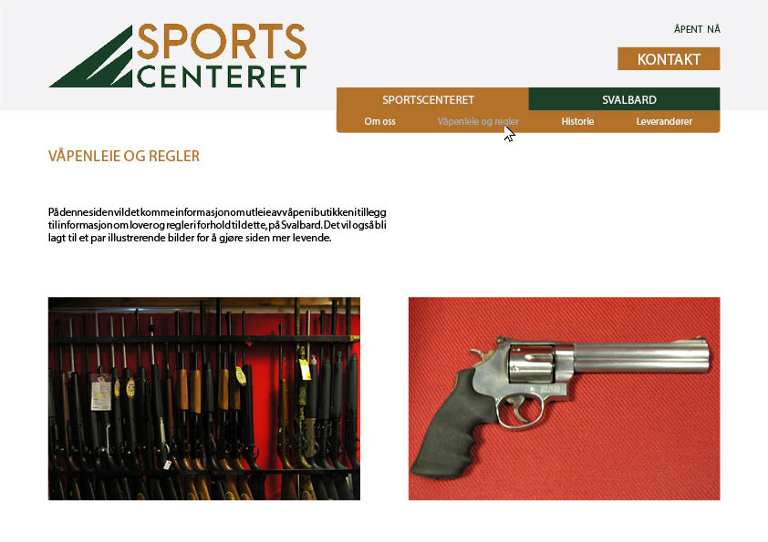
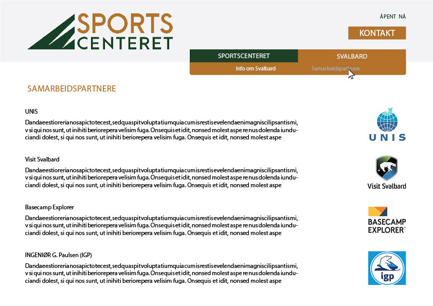
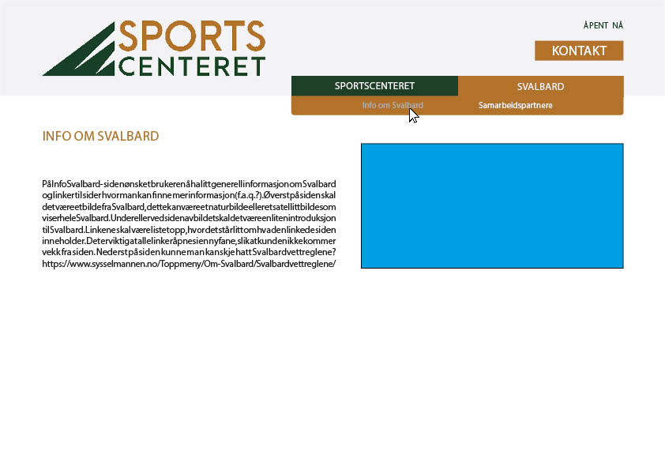
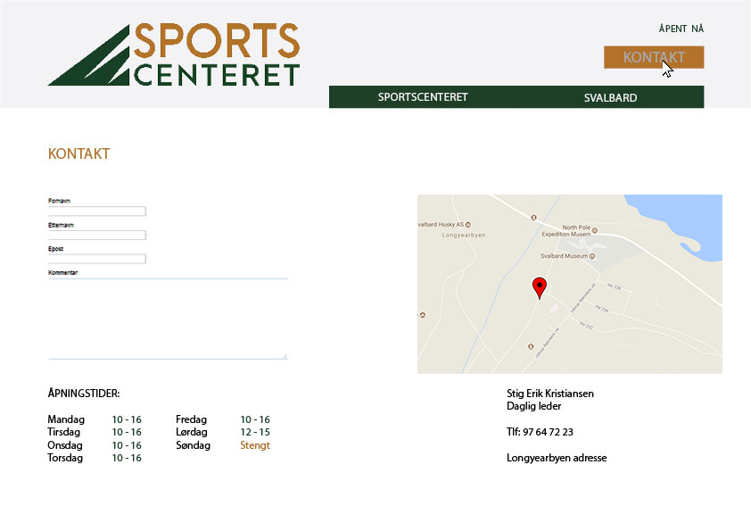
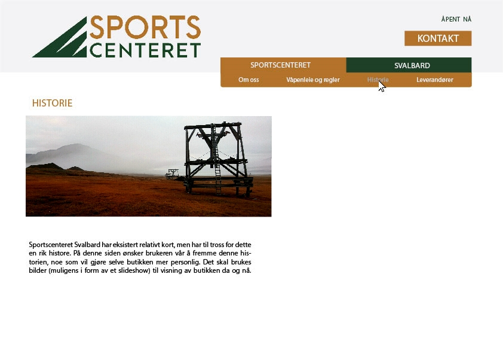
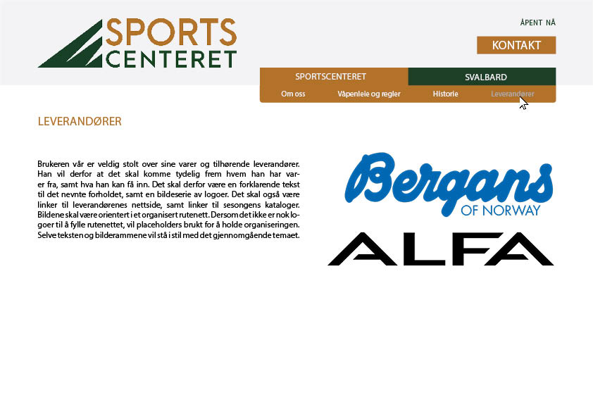

P2 Design Guidelines
Hilmar, Henrik, Ida og Magnus (HHIM)
October 5, 2017
Administrative Detaljer
Klientens navn: Stig Erik Kristiansen
Nettside: Sportscenteret
Målgruppe og mål for siden
KLIENTENS ULTIMATE MÅL med nettsiden er flere besøkende i den fysiske butikken. Han vil også at siden skal fungere som en hjelp for besøkende på Svalbard slik at de lett får med seg lover og regler som gjelder på øygruppen. Selv om butikken livnærer seg på salg av produkter, ønsker ikke klienten noe av dette på sin nettside. Siden vil derfor kun inneholde informativ tekst om butikken og hva som tilbys der, og videre informasjon om forskjellige severdigheter, normer og regler på Svalbard. Det vil også være viktig å skille informasjon om den fysiske butikken fra tips og råd om Svalbard, da det lett kan oppfattes som påtrengende og utrygt for besøkende å notere seg råd fra noen som prøver å selge dem noe. Meningen med siden er å med andre ord å gi besøkende et positivt og trygt inntrykk av både butikken og stedet ved å gjøre informasjonen lett tilgjengelig.
Navisjonsstuktur
Side layout og utseende
 Startside og header
Font
- Logo: Keep old color scheme, new font (Arca Majora 3 Bold)
- Kontakt-knapp: San Francisco Medium, 19pt
- Nav-bar: San Francisco Light, 13pt og 11pt
Fargesjema
- Tekst: #f3f3f5
- Valgt meny-knapp tekst: #aaaaaa
- Bakgrunn-header: #f3f3f5
- Nav-bar: #1c3f26
- Kontakt-knapp: #b2722a
- Link: #b2722a
Navbar-posisjon og utforming
Navigasjonsbaren skal være i headeren til høyre under Kontakt-knappen. Den skal være firkantet og med to valgmuligheter. Ved valg av en av disse blir valgt knapp oransje og det kommer ned en undermeny, denne skal også være oransje.
Bakgrunnsbilde
Slider med bilder eller statisk bilde under headeren. Dette skal være bilder fra Svalbard som er relevante for butikken.
Footer
Copyrigth 2017 og navnet på gruppa. Evt. sosiale medier.
Innholdssider
Font
- Overskrift: San Francisco Black, 17pt
- Tekst: San Francisco Thin, 12pt
Fargesjema
- Bakgrunnsfarge: #ffffff
- H1: #b2722a og #1c3f26
- Tekst: #222222
Designvalg
Vi har valgt de nevnte designaspektene til vår nettside på bakgrunn av butikkeierens tidligere nettside og butikkens stil. Sportscenteret Svalbard er en jakt- og friluftslivbutikk, og på bakgrunn av dette har vi valgt ta dette inn i nettsiden ved bruk av jordlige farger. Logoen er en kombinasjon av en mørk grønnfarge, som assosieres med natur og vegetasjon. Den brunlige gulfargen har naturlige preg, og kan lett finnes igjen i lokal vegetasjon på Svalbard i form av mose og annen tundravegetasjon. Selve logoen tar inspirasjon fra de isbreformede fjellene omkring Longyearbyen. Dette omsluttes i headeren av en grå/hvit bakgrunn, og innhold med en hvit bakgrunn. Dette gjør siden pen og oversiktlig, samt som menyen og logoen står i kontrast med innholdet. Navigasjon blir derfor klar- og tydeliggjort på siden, og eventuelle uklarheter om hvor en finner informasjon og/eller linker blir mindre usannsynlig.
Logoen og navigasjonsbaren er formet av rene, rette linjer uten kanter. Dette holder på renheten vi ønsker å få frem i nettsiden, samt gjør knapper tydelig fra bakgrunnen. Vi har valgt å bruke fonten San Francisco (Designet av Apple), som står i god stil med den nevnte renheten funnet i grafikken. Det er ingen nevneverdige stileringer gjort i fonten, og sammen med at den er veldig lett å lese, gjør det veldig godt egnet til vår nettside. Til logoen har vi valgt å bruke en font som holder med noe av mektigheten og tykkelsen til den gamle fonten til logoen, men likevel holder holder fast ved det moderne og rene.
Innhold
Om oss
Helt siden 1995 har Sportscenteret drevet med salg av sportsrelaterte artikler på Svalbard. Hos oss finner du det du trenger av utstyr, deriblant våpen, sko, ski, sykkel, bekledning og annet friluftsrelatert utstyr.
Send oss gjerne en e-post eller ring dersom du skulle ha spørsmål. Vi kan da også gi eventuelle pristilbud på varene vi tilbyr. Dersom det er noe vi ikke har på lager, kan vi skaffe det på kort tid.
Hvis du har tenkt deg til Svalbard, ring oss 1-2 uker før du reiser så vil vi ha varen klar når du kommer.
Lover og regler
På siden Lover og regler skal det listes opp diverse lover og regler som er relevant for folk som skal besøke Svalbard. Det skal da være linker som fører videre til informasjon på Sysselmannens hjemmesider. Viktig at linker åpnes i ny fane, slik at brukeren forblir på siden.
Samarbeidspartnere
Logo, link og litt om hvem de er. Samarbeidspartnere: Visit Svalbard, UNIS, Base Camp og IGP.
Info Svalbard
På Info Svalbard- siden ønsket brukeren å ha litt generell informasjon om Svalbard og linker til sider hvor man kan finne mer informasjon(f.a.q.?). Øverst på siden skal det være et bilde fra Svalbard, dette kan være et naturbilde eller et satellittbilde som viser hele Svalbard. Under eller ved siden av bildet skal det være en liten introduksjon til Svalbard. Linkene skal være listet opp, hvor det står litt om hva den linkede siden inneholder. Det er viktig at alle linker åpnes i en ny fane, slik at kunden ikke kommer vekk fra siden. Nederst på siden kan man ha Svalbardvettreglene.
Kontakt
Under samtale med brukeren vår, ble det diskutert mye om kontaktsiden. Den nevnte siden er en veldig sentral del av nettsiden totalt, da det er her en stor del av kommunikasjonen mellom kunder og butikken. Kunder kommer fra hele verden i den hensikt å besøke Svalbard, og vil ønsker derfor å planlegge turen i god tid. Ved leie av våpen eller bestilling av varer, blir brukeren vår kontaktet via mail. Brukeren ønsker at denne mailadressen skal være så tilgjengelig som mulig, samt ha et kontaktskjema på nettsiden. I tillegg til dette vil adressen med dynamisk kartfunksjon finne sted her. Dette, sammen med fullstendige åpningstider, vil gjøre siden en destinasjonsside for en stor andel kundene. Kontaktskjemaet til siden vil stå i samme stil som det gjennomgående temaet.
Historie
Sportscenteret Svalbard har eksistert relativt kort, men har til tross for dette en rik histore. På denne siden ønsker brukeren vår å fremme denne historien, noe som vil gjøre selve butikken mer personlig. Det skal brukes bilder (muligens i form av et slideshow) til visning av butikken da og nå.
Leverandører
Brukeren vår er veldig stolt over sine varer og tilhørende leverandører. Han vil derfor at det skal komme tydelig frem hvem han har varer fra, samt hva han kan få inn. Det skal derfor være en forklarende tekst til det nevnte forholdet, samt en bildeserie av logoer. Det skal også være linker til leverandørenes nettside, samt linker til sesongens kataloger. Bildene skal være orientert i et organisert rutenett. Dersom det ikke er nok logoer til å fylle rutenettet, vil placeholders brukt for å holde organiseringen. Selve teksten og bilderammene vil stå i stil med det gjennomgående temaet.
Minimumskrav til applikasjoner
Språkvelger
Vi tenker å ha en språkvelger som gjør at vi kan endre språket fra norsk til engelsk, og tilbake. Våre minimumskrav til applikasjonen er:
- To små flaggikon(Norge og Storbritannia) som skal være mulig å trykke på.
- Det språket som er valgt skal vises på en av de to flaggknappene. Den skal vises som “nedtrykket” eller med en hvit border rundt.
- Standardspråket skal være norsk.
- Når et språk er valgt, skal alle sider som man navigerer seg inn på være på samme språk.
Kontaktsjema
I kontaktsjemaet skal man kunne skrive inn navn, epost og spørsmål eller henvendelser man har til butikken. Det skal altså være tre felt hvor man kan skrive inn informasjonen og en knapp for å sende forespørselen. Vi bruker JavaScript for å sjekke om eposten er skrevet riktig og at det er fylt inn innhold i navnfeltet og spørsmålfeltet.
- Fire felt for å skrive inn; Navn, epost, hendvendelse og spørsmål.
- En knapp for å sende forespørselen.
- En funksjon som sjekker om innholdet i feltene er skrevet inn riktig.
Dynamisk kartfunksjon
Vårt mål er å ha en dynamisk kartfunksjon som ved default er stilt inn på Sportscenteret, og at man kan navigere seg ut for å se resten av Svalbard. Våre minimumskrav til applikasjonen er:
- Standardbildet (default) på kartet når man går inn eller oppdaterer siden skal være stilt inn på Sportscenteret.
- Det skal være mulig å navigere seg i og rundt på Svaldbard.
- Det skal være tydelig markert hvor butikken ligger.
Dynamisk åpningstid
På siden skal det stå om butikken er åpen eller stengt ut i fra de faktiske åpningstidene til butikken. På den måten kan man raskt skjekke om butikken er åpen om man tenker seg innom.
- Viser "Åpent" i grønn skrift når butikken er åpen.
- Viser "Stengt" når butikken har stengt.
- Følger butikkens faktiske ånpningstider.
Plan
For å kunne arbeide i grupper, er en plan for hva som skal gjøres helt essensielt. Vi har derfor laget et mappesystem og e arbeidsfordeling som skal sørge for at alt blir gjort, og gjort i riktig tid.
Det overordnede mappesystemet ser slik ut:
- Sportscenteret/
- Styling.css
- Home.html
- Contact.html
- About.html
- Supplies.html
- History.html
- Info_Svalbard.html
- Weapons.html
- Partners.html
- Images/
- Waiting for client to send
- Scripts/
- Map.js
- Language.js
- ContactScheme.js
- OpeningHours.js
Tilhørende det nevnte mappesystemet, har vi også lagt en veiledende plan med frister. Denne ser (foreløpig) slik ut: